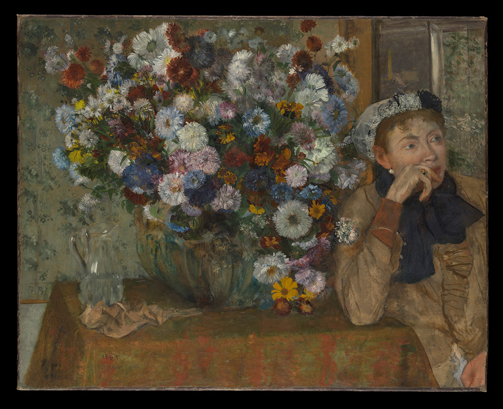

作品名 「花瓶のそばで肘をつく女」
花言葉
ダリア「優雅」「気品」「栄華」「威厳」
「裏切り」「移り気」「気まぐれ」「不安定」
ダリア、アスター、キク
「優雅」
ダリアとはメキシコ原産のキク科の花。15世紀のアステカ文明で、神聖な花として育てられていたダリア。この頃からすでに品種改良が行われ、ヨーロッパに伝わるときには色とりどりのダリアの花が存在していた。観賞用としてだけでなく、食用、薬用としても重宝された。現在でもメキシコの国花に指定され、ダリアの日（8/4）が存在するほど国民に愛されている花です。
花瓶のそばで肘をつく女
エドガー・ドガ
テーブルの上の花は、白、ぴんく、水色のアスター、ニオイアラセイトウ、ヤグルマギク、テンニンギク、ダリアなどいずれも晩夏の花で、右上の窓から見える緑の生い茂る庭から採ってきたのだろう。夫人の画面の端に、しかも画面の外に視線を向ける姿勢で配置したいかにもドガらしい構図となっている。エドガー・ドガは、踊り子や現代生活、競馬の風景などを描いた作品で知られるフランスの印象派の画家です。ドガの作品の特徴は、斬新な構図と、現代生活やバレエのシーンで捉えた動きへのこだわりにある。19世紀末から20世紀初頭にかけての最も偉大な芸術家の一人として広く知られている。
| 作品名 | 花瓶のそばで肘をつく女 |
| 作者 | エドガー・ドガ |
| 制作年 | 1865年 |
| 種類 | キャンバス・油彩 |
| 寸法 | 73.7cm × 92.7 cm |
| 所蔵 | メトロポリタン美術館 |